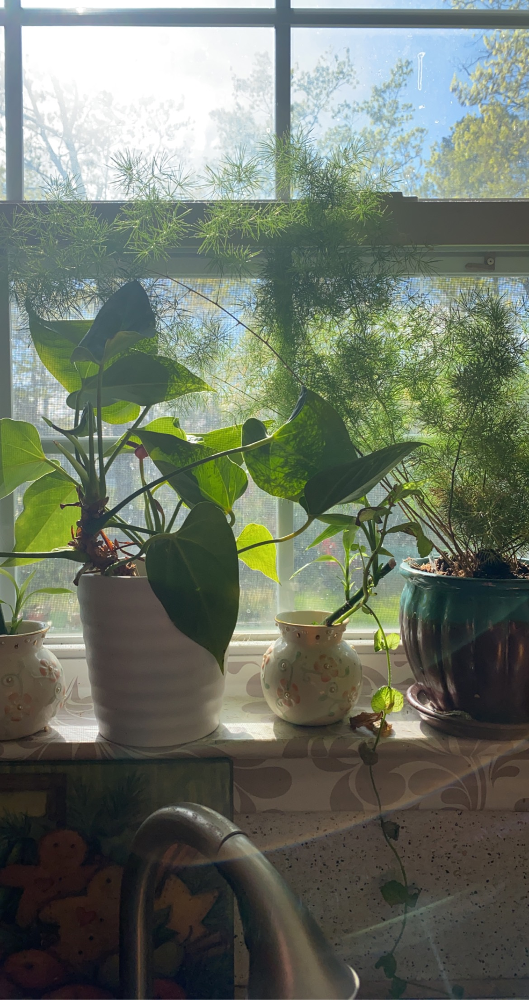
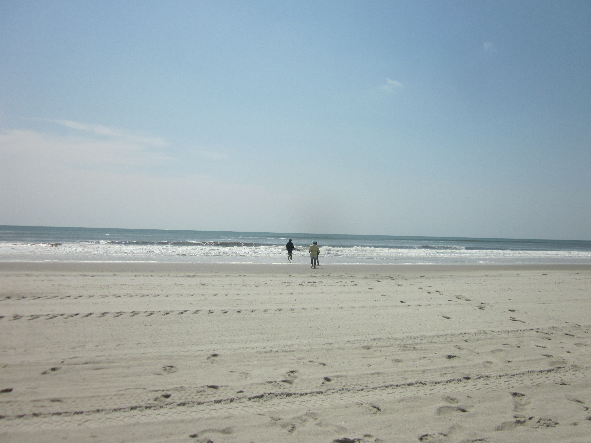

Home
About
Photography
Loading Photos...
📷 Kaavya's Captures
 
📸 Photo Contest Winner
2021
🌄 Travel Blogger
2022
🎞️ Street Photographer
2023
Hover over the cards to see them slide out!
← Back to Home